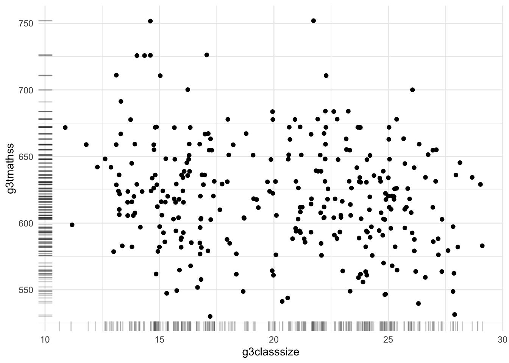

Die Modellierung mit dem allgemeinen linearen Modell (GLM) stellt eine sehr mächtige und elegante Möglichkeit zur Analyse von Daten dar (Moosbrugger 2011). Denn das GLM stellt eine Verallgemeinerung verbreiteter “einfacherer” Verfahren wie t-Tests, ANOVAs, ANCOVAs etc. dar. Ohne Grundkenntnisse der linearen Algebra und Wahrscheinlichkeitstheorie ist das GLM als Ganzes jedoch schwierig zu durchdringen. Daher beginnen wir mit zwei klassischen Spezialfällen des GLM, der einfachen linearen regression und der multiple linearen Regression.
2.1 Einfache lineare Regression
In diesem Unterkapitel soll in die einfache lineare Regression eingeführt werden. Dazu dient ein Erklärvideo gefolgt von Aufgaben.
2.1.1 Erklärvideo
Datengrundlage
Wir werden in diesen Workshop mit den Scientific Usefiles des STAR-Projektes (Achilles u. a. 1985) arbeiten. Im STAR-Projekt standen die folgenden Forschungsfragen im Vordergrund:
What are the effects of a reduced class size on the achievement (normed and criterion tests) and development (self-concept, attendance, etc.) of students in public elementary school grades (K-3)?
Is there a cumulative effects of being in a small class over an extended time (4 years) as compared with a one-year effect for students in a small class for one year?
Does a training program designed to help teachers take maximum advantage of small classes, or to use aides effectively, improve student performance as compared with teachers who have no special preparation for their altered conditions?
Die entsprechenden Variablenbezeichnungen sowie die Kodierung der Variablenausprägungen werden in den jeweiligen Beispielen beschrieben.
2.1.2 Worked Out Example
Im ersten Worked Out Example wollen wir der Frage nachgehen, inwiefern die tatsächliche Klassengröße mit der Leistung in einem standardisierten Mathematiktest assoziiert ist.
2.1.2.1 Plot
In einem ersten Schritt (der ganz generell immer zu empfehlen ist) plotten wir die Rohdaten. Um keine Probleme mit geclusterten Daten zu bekommen, verwenden wir aus jeder Klasse nur eine:n zufällig gezogenen Schüler:in. Ein .sav-file, das die notwendigen Variablen enthält, kann hier heruntergeladen werden.
library(sjPlot)library(bayestestR)# read the aggregated datadata_star_g3aggregated <-read_spss("data/data_star_sampled.sav")# plot rawdataggplot(data_star_g3aggregated, # the used data setaes(g3classsize, g3tmathss)) +# define x- and y-axisgeom_jitter() +# add jittered pointsgeom_rug(position =position_jitter(), alpha = .2) +# add rug at marginsstat_smooth(method ="linear", se = F) +# add linear smoothertheme_minimal() # make appearance "clearer"
`geom_smooth()` using formula = 'y ~ x'
Warning: Removed 33 rows containing non-finite outside the scale range
(`stat_smooth()`).
Warning: Computation failed in `stat_smooth()`.
Caused by error in `get()`:
! object 'linear' of mode 'function' was not found
Warning: Removed 33 rows containing missing values or values outside the scale range
(`geom_point()`).

2.1.2.2 Nicht-Standardisierte Regression
Um nun eine einfache lineare Regression zu schätzen, verwendet man in R die lm() Syntax. Links der Tilde ~ steht die abhängige Variable, rechts davon die unabhängige.
mod00 <-lm(g3tmathss ~ g3classsize, data = data_star_g3aggregated)
Eine Übersicht über das Modell bekommt man, wenn man das Objekt mod00 der der Funktion summary() übergibt.
summary(mod00)
Call:
lm(formula = g3tmathss ~ g3classsize, data = data_star_g3aggregated)
Residuals:
Min 1Q Median 3Q Max
-122.777 -29.052 -2.627 26.348 158.723
Coefficients:
Estimate Std. Error t value Pr(>|t|)
(Intercept) 647.6775 11.4121 56.754 <2e-16 ***
g3classsize -1.3500 0.5524 -2.444 0.0151 *
---
Signif. codes: 0 '***' 0.001 '**' 0.01 '*' 0.05 '.' 0.1 ' ' 1
Residual standard error: 43.34 on 301 degrees of freedom
(33 observations deleted due to missingness)
Multiple R-squared: 0.01946, Adjusted R-squared: 0.0162
F-statistic: 5.973 on 1 and 301 DF, p-value: 0.0151
Die (lineare) Funktionsgleichung kann man sich mit der Funktion extract_eq() aus dem Paket equatiomatic ausgeben lassen. Mit der Option use_coefs = T setzt man die geschätzten Werte für die Parameter ein.
Der Steigungskoeffizient beträgt \(\approx .90\). Unterscheiden sich zwei Klassen um eine:n Schüler:in schätzt das Modell die Differenz im Mathematikscore auf \(-.90\). Das Intercept wird auf \(638.9\) geschätzt. Eine (hypothetische) Klasse mit 0 Schüler:innen hätte also einen durchschnittlichen Mathematikleistungsscore von \(638.9\).
Die drei Sternchen am rechten Rand des summary() Outputs zeigen an, dass die p-Werte für die Punktnullhypothesen \[
H_0\text{: Intercept} = 0
\]\[
H_0\text{: Slope} = 0
\] signifikant sind. Es macht also Sinn diese zu verwerfen.
2.1.2.3 Standardisierte Regression
Eine standardisierte lineare Regression setzt wie im Video erklärt voraus, dass alle Variablen z-standardisiert sind. Liegen unvollständige Daten vor, ist es wichtig diese Standardisierung erst nach dem fallweisen Ausschluss dieser fehlenden Daten vorzunehmen.
mod01 <-lm(scale(g3tmathss) ~scale(g3classsize), data = data_star_g3aggregated |># filter rows if g3tmathss or g3classsize is NAfilter(!(is.na(g3tmathss) |is.na(g3classsize))))summary(mod01)
Call:
lm(formula = scale(g3tmathss) ~ scale(g3classsize), data = filter(data_star_g3aggregated,
!(is.na(g3tmathss) | is.na(g3classsize))))
Residuals:
Min 1Q Median 3Q Max
-2.8100 -0.6649 -0.0601 0.6030 3.6327
Coefficients:
Estimate Std. Error t value Pr(>|t|)
(Intercept) 1.157e-15 5.698e-02 0.000 1.0000
scale(g3classsize) -1.395e-01 5.708e-02 -2.444 0.0151 *
---
Signif. codes: 0 '***' 0.001 '**' 0.01 '*' 0.05 '.' 0.1 ' ' 1
Residual standard error: 0.9919 on 301 degrees of freedom
Multiple R-squared: 0.01946, Adjusted R-squared: 0.0162
F-statistic: 5.973 on 1 and 301 DF, p-value: 0.0151
Das Intercept wird auf einen Wert mit 14 Nullen nach dem Komma geschätzt, ist also erwartungskonform quasi gleich null und nicht-signifikant. Der Steigungskoeffizient beträgt \(\approx .20\) und liegt nach den Cohen Benchmarks (Cohen 1988) im Bereich kleiner bis moderater Effekte.
Es gibt Pakete, die darauf spezialisiert sind (mehrere) Regressionsmodelle zusammengefasst übersichtlich in Tabellen darzustellen. Mit der folgenden Syntax bekommt man etwa nicht nur standardisierte und unstandardisierte Koeffizienten, sondern auch deren Konfidenzintervalle, beides auf eine sinnvolle Nachkommestellenanzahl gerundet:
Das STAR-Experiment variierte die Klassengrößen experimentell in K, G1, G2, G3 & G4. Daten wurden aber bis zu High School erhoben.
Die Variable g4tmathss etwa erfasst die Mathematikleistung in Klasse 4, die Variablen g4pteffr und g4ptvalu den von Lehrkräften eingeschätzte schulische Leistungsbereitschaft bzw. die Wertschätzung schulischer Inhalte.
Wie groß schätzt ihr die Effekte der Prädiktoren g4pteffr und g4ptvalu ein? Berechnet die standardisierten und nicht-standardisierten Regressionsmodelle und diskutiert die interne, externe und Konstruktvalidität der so erhaltenen Befunde.
Der standardisierte Regressionskoeffizient der Effort-Skala ist mit .58 enorm groß ausgeprägt und auch der Effekt des Prädiktors value ist substantiell. Beachtet werden muss allerdings, dass die p-Werte nichts über die Sicherheit der Unterschiedlichkeit der beiden Steigungsparameter aussagt. Getestet wurde jeweils wieder nur die Nullhypothese eines Nulleffekts. Zu kritisieren sind hier sicher interne und Konstruktvalidität. Effort und Value der Schüler:innen wurden von den Lehrkräften ohne vorherige Raterschulung eingeschätzt. Daher ist anzunehmen, dass dieses Rating auch durch die Leistung der Schüler:innen verzerrt ist (z.B. im Sinne eines Haloeffekts, Dennis 2007). Die interne Validität der Schlussfolgerung aus diesen Regressionsmodellen ist schwach, da es sich nur um querschnittliche Daten handelt und die Ausprägung der unabhängigen Variable nicht randomisiert wurde.
2.3 Multiple lineare Regression
In diesem Unterkapitel soll in die multiple Regression eingeführt werden. Dazu dient ebenfalls ein Erklärvideo gefolgt von Aufgaben.
2.3.1 Erklärvideo
2.3.2 Erklärvideo
Die standardisierten Steigungskoeffizeinten \(\beta_i\) stellen ja eine Effektstärke der partiellen Assoziation des Prädiktors \(i\) mit der abhängigen Variable dar. Nimmt man mehrere Prädiktoren auf, kann der Determinationskoeffizient \(R^2\) eine Effektstärke für die Güte des Gesamtmodells darstellen.
2.3.3 Worked Out Example
In der Übungsaufgabe zur einfachen linearen Regression haben wir vermutet, dass Einschätzung von Effort und Value durch die Lehrkraft von der Leistung der Lernenden gefärbt sein könnte. Wäre dem so, sollte man ein Sinken der Prädiktionskraft des Prädiktors Value nach Adjustierung um die Vorjahresleistung beobachten.
tab_model(lm(g4tmathss ~ g4ptvalu, data = data_star_sampled),lm(g4tmathss ~ g4ptvalu + g3tmathss, data = data_star_sampled),show.ci = F, show.std = T)
TOTAL MATH SCALE SCORE
CTBS GRADE 4
TOTAL MATH SCALE SCORE
CTBS GRADE 4
Predictors
Estimates
std. Beta
p
Estimates
std. Beta
p
(Intercept)
516.75
-0.00
<0.001
215.13
0.00
<0.001
GRADE 4 PARTICIPATION
SUBSCORE: VALUE
14.92
0.58
<0.001
8.33
0.32
<0.001
TOTAL MATH SCALE SCORE
SAT GRADE 3
0.62
0.54
<0.001
Observations
97
94
R2 / R2 adjusted
0.337 / 0.330
0.552 / 0.542
Dies ist tatsächlich der Fall. Der standardisierte Regressionskoeffizient sinkt von .35 auf .12.
Untersucht, inwiefern die ebenfalls Lehrer:inneingeschätzte Variable Initiative (z.B. “participates actively in class discussions”) g4ptinit die Mathematikleistung in Klasse 4 g4tmathss prädiziert und inwiefern sich der Effekt nach Adjustierung der Vortestleistung g3tmathss ändert
lm(g4tmathss ~ g4ptinit, data = data_star_sampled)lm(g4tmathss ~ g4ptinit + g3tmathss, data = data_star_sampled)
tab_model(lm(g4tmathss ~ g4ptinit, data = data_star_sampled),lm(g4tmathss ~ g4ptinit + g3tmathss, data = data_star_sampled),show.std = T, show.ci = F)
TOTAL MATH SCALE SCORE
CTBS GRADE 4
TOTAL MATH SCALE SCORE
CTBS GRADE 4
Predictors
Estimates
std. Beta
p
Estimates
std. Beta
p
(Intercept)
597.86
-0.00
<0.001
278.49
-0.00
<0.001
GRADE 4 PARTICIPATION
SUBSCORE: INITIATIVE
4.26
0.59
<0.001
2.01
0.28
0.002
TOTAL MATH SCALE SCORE
SAT GRADE 3
0.60
0.53
<0.001
Observations
97
94
R2 / R2 adjusted
0.352 / 0.345
0.521 / 0.510
Der standardisierte Regressionskoeffizient der Initiative-Skala ist mit .49 groß ausgeprägt. Nach Adjustierung um die Vorjahrestestleistung, sinkt die prädiktive Kraft deutlich, es ist aber weiterhin ein substantieller Effekt zu beobachten.
2.5 Weiterführende Literatur
Literaturempfehlungen zum Thema Regression
Eid, M., Gollwitzer, M., & Schmitt, M. (2013). Statistik und Forschungsmethoden: Lehrbuch. Mit Online-Materialien (3. Aufl.). Beltz.
Gelman, A., Hill, J., & Vehtari, A. (2020). Regression and Other Stories (1. Aufl.). Cambridge University Press. https://doi.org/10.1017/9781139161879
Achilles, C. M., Helen Pate Bain, F. Bellot, J. Boyd-Zaharias, J. Finn, J. Folger, John Johnston, und Elizabeth Word. 1985. „The State of Tennessee’s Student/Teacher Achievement Ratio (STAR) Project“. Technical {{Report}}. Tennessee State Department of Educatbn.
Cohen, Jacob. 1988. Statistical Power Analysis for the Behavioral Sciences. 2. Aufl. New Jersey: Lawrence Erlbaum.